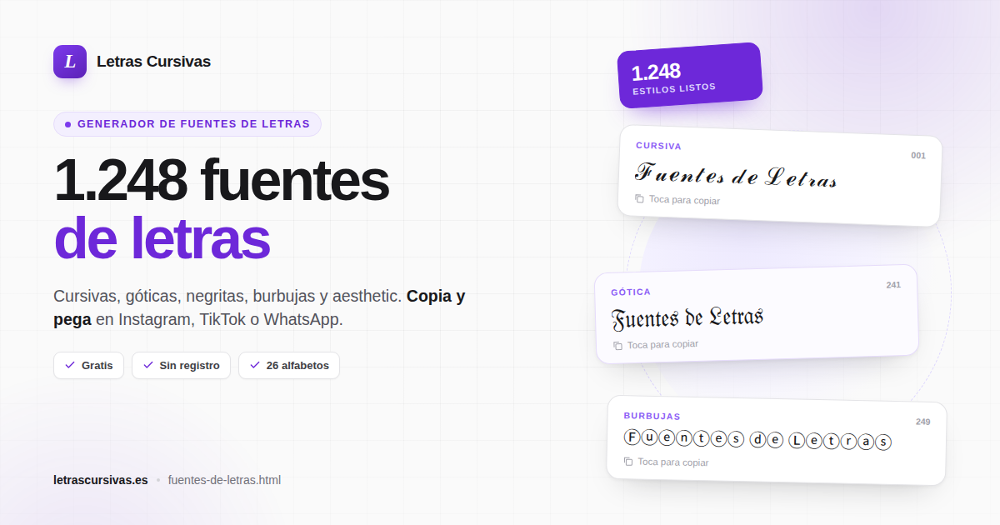

Guía práctica
Generador de fuentes de letras: guía 2026 para redes
Aprende a usar un generador de fuentes de letras para crear nombres y bios con Unicode en Instagram, TikTok y WhatsApp. Pasos, límites y ejemplos reales.

Un generador de fuentes de letras convierte un texto normal en caracteres decorados que puedes copiar y pegar en cualquier app. No instala una tipografía ni cambia el teclado: transforma cada letra en un símbolo Unicode ya existente. Por eso funciona en la bio de Instagram, el nombre visible de TikTok, un estado de WhatsApp o un apodo de juego, siempre que el texto sea corto y la app acepte esos caracteres.
Esta guía explica cómo usar un generador de fuentes de letras paso a paso, qué estilos conviene elegir en cada plataforma y qué límites reales debes respetar. También verás cuándo no usarlos, porque el mismo trazo que llama la atención puede dificultar la lectura a un lector de pantalla (Scope, consultado en 2026). Si solo quieres probar ahora, abre el generador de letras cursivas y vuelve aquí para elegir bien.
Key Takeaways - Un generador de fuentes de letras produce caracteres Unicode, no archivos de fuente instalables. - Úsalo en nombres visibles, bios, estados y apodos; evita los campos de
@usuario, que suelen rechazar estos símbolos. - Instagram permite hasta 150 caracteres en la bio; el "Acerca de" de WhatsApp admite hasta 50 caracteres de texto más un emoji (Instagram, WhatsApp). - Copia siempre el texto resultante y conserva una versión en letra normal para buscadores y lectores de pantalla. - Si el estilo se ve cortado en móvil, cambia a una variante sencilla antes de publicar.
Contenidos:
- Qué es exactamente un generador de fuentes de letras
- Antes de empezar: qué necesitas
- Cómo usar un generador de fuentes de letras en 5 pasos
- Dónde usar cada estilo: tabla por plataforma
- Errores frecuentes y cómo evitarlos
- Cómo saber que funcionó
- Preguntas frecuentes
- Sobre esta guía
- Empieza con una palabra
Qué es exactamente un generador de fuentes de letras
Un generador de fuentes de letras toma tu texto —por ejemplo, Hola— y sustituye cada carácter por otro visualmente similar pero distinto. La mayoría de los estilos proceden del bloque Mathematical Alphanumeric Symbols (U+1D400–U+1D7FF). Unicode creó ese conjunto de letras y dígitos para notación matemática (Unicode Consortium, UTR #25). De ahí que una "fuente" como 𝓗𝓸𝓵𝓪 no sea realmente una fuente: es una secuencia de caracteres que tu sistema dibuja con el tipo de letra disponible.
Esto explica tres cosas que sorprenden al principio:
- No necesitas instalar nada. El resultado viaja como texto, así que se pega en cualquier campo que acepte Unicode.
- El aspecto puede cambiar entre dispositivos. Un mismo carácter se dibuja de forma distinta en Android, iOS o Windows según las fuentes instaladas.
- Algunos estilos no son letras, sino combinaciones. Los adornos con coronas, tachaduras o puntos añaden marcas combinantes que ciertas apps recortan o eliminan.
Si vienes de las letras cursivas clásicas, el generador de fuentes es la versión ampliada: agrupa estilos caligráficos, góticos, negritas decorativas, burbujas, doble línea y alfabetos temáticos en un solo lugar. Para una estética más concreta, también puedes usar el generador de letras bonitas o el de fuentes góticas.
Antes de empezar: qué necesitas
No hay requisitos técnicos, pero sí conviene tener claro el objetivo antes de elegir estilo:
- Un texto corto. Un nombre, una frase de 2 a 5 palabras o una inicial. Los párrafos largos en Unicode cansan la vista.
- La app de destino abierta. Así comprobarás el resultado en el mismo sitio donde lo vas a publicar.
- Una versión normal del texto. Guárdala en el portapapeles o en una nota: te servirá para buscar, traducir o corregir.
- Tiempo: menos de 2 minutos. Dificultad: principiante.
Cómo usar un generador de fuentes de letras en 5 pasos
Paso 1: Escribe el texto original
Al terminar este paso tendrás una cadena limpia que el generador puede transformar sin sorpresas. Escribe el nombre o frase exactamente como quieres que se lea, con tildes y ñ incluidas. Evita espacios al principio y al final: algunos estilos los convierten en símbolos invisibles y luego el texto parece "desalineado".
Escribe primero, decora después. Por ejemplo, usa María Gómez, no María Gómez. Si quieres un apodo para jugar, empieza por la versión en letra normal y después compara con los nombres para Free Fire para inspirarte.
Paso 2: Elige el estilo según el canal
Al terminar este paso habrás reducido la lista a dos o tres candidatos adecuados para tu plataforma. No todos los estilos funcionan igual en todas partes:
- Bio de Instagram: negritas sencillas, cursivas limpias o itálicas. La bio tiene un límite de 150 caracteres (Instagram), así que un nombre decorado de 12 letras ya ocupa una parte notable.
- Nombre visible de TikTok: caligrafías y góticos de trazo grueso. El
@usuarioes un campo técnico con reglas propias; usa el estilo en el nombre visible. - Acerca de WhatsApp: una sola palabra o frase corta. El Help Center indica que caben hasta 50 caracteres de texto más un emoji (WhatsApp).
- Apodos de juego y Discord: fraktur, negrita doble y estilos con borde. Aguantan bien resoluciones pequeñas siempre que no lleven adornos combinantes.
Regla práctica: si el estilo tiene adornos alrededor de cada letra, úsalo solo en 1 o 2 palabras. Si tiene marcas encima o debajo, comprueba el resultado en el móvil antes de publicar.
Paso 3: Copia el resultado, no una captura
Al terminar este paso tendrás el texto decorado en el portapapeles. Pulsa el botón Copiar del generador y pega en el campo de destino. Nunca copies una imagen del texto: una captura no se puede buscar, no se puede traducir y ocupa más espacio que unas cuantas letras Unicode.
Comprueba que se haya copiado la cadena completa. Una forma rápida de verificarlo es pegarla primero en una nota: si aparecen signos de interrogación o cuadros, ese dispositivo no tiene una fuente que cubra ese carácter y conviene probar otro estilo. Para coronas y marcas sueltas, los símbolos para copiar y pegar son una alternativa más predecible.
Paso 4: Pega y comprueba en la app
Al terminar este paso sabrás si el estilo sobrevive al destino real. Pega el texto en la bio, el nombre visible o el estado y observa tres cosas:
- Que no se corte. Si la app muestra puntos suspensivos, acorta el texto o elige una variante más simple.
- Que se lea en móvil. Un gótico muy cargado puede volverse ilegible a 12 px.
- Que no se transforme. Algunos buscadores y formularios normalizan Unicode y devuelven la letra original; eso es esperable.
Si vas a publicar en varias redes a la vez, guarda una versión distinta para cada una en lugar de intentar que un solo estilo sirva para todo.
Paso 5: Guarda una versión legible
Al terminar este paso tendrás una copia de seguridad accesible y compatible. Escribe el mismo texto en letra normal justo debajo o en una nota privada. Esta versión sirve para:
- Encontrar tu perfil mediante búsquedas internas o desde Google.
- Leer el nombre en voz alta con un lector de pantalla.
- Corregirlo en un documento oficial sin tener que reconvertir símbolos.
Los lectores de pantalla pueden anunciar una letra decorada como "mathematical sans-serif script t" en lugar de una "t" (Scope). Por eso la versión normal no es opcional cuando el texto aparece en un perfil público.
Dónde usar cada estilo: tabla por plataforma
| Plataforma | Campo recomendado | Estilo que mejor funciona | Límite o aviso |
|---|---|---|---|
| Bio, nombre visible | Negrita simple, cursiva limpia | Bio: 150 caracteres (Instagram) | |
| TikTok | Nombre visible, descripción | Caligrafía, gótico de trazo grueso | El @usuario tiene reglas propias |
| "Acerca de", mensajes cortos | Una palabra en itálica o negrita | Hasta 50 caracteres + 1 emoji (WhatsApp) | |
| Discord / juegos | Apodo, nombre de clan | Fraktur, doble línea, burbuja | Evita adornos combinantes en móvil |
| Web y correo | Titulares decorativos | Cursiva o serif Unicode | Añade siempre texto normal equivalente |
La tabla resume la decisión, pero la prueba final siempre es visual: pega, mira en la app y ajusta.
Síntesis editorial: la combinación de tres fuentes citadas —el origen matemático de los caracteres, los límites publicados por las apps y el comportamiento de los lectores de pantalla— explica la regla que aplicamos aquí: estilo decorativo solo en texto corto, versión normal siempre disponible. Es una guía de uso derivada de esas fuentes, no una métrica oficial de ninguna plataforma.
Si quieres comparar más variedades antes de decidir, vuelve al generador de fuentes de letras y prueba tres variantes de la misma palabra.
Errores frecuentes y cómo evitarlos
Usar el estilo en el @usuario. Es el error más común. Los nombres de usuario de Instagram y TikTok aceptan un conjunto de caracteres mucho más restringido que el nombre visible. Si pegas letras decoradas allí, la app las rechazará o las convertirá. La solución es sencilla: deja el @usuario en letra normal y aplica el estilo al nombre que aparece debajo del avatar.
Llenar la bio de adornos. Cada carácter Unicode cuenta para el límite de la plataforma, y los adornos suman caracteres extra. Una bio con 120 símbolos decorados deja poco espacio para una llamada a la acción. Redúcela a una palabra destacada y deja el resto en texto plano.
Confiar en un estilo que no se ve en tu móvil. Los caracteres nuevos pueden no estar cubiertos por la fuente del sistema. Si ves cuadros, signos de interrogación o espacios raros, cambia de estilo. No intentes "arreglarlo" añadiendo más símbolos: el problema es de cobertura de fuente, no de cantidad.
Olvidar la accesibilidad. Un texto que solo existe como símbolo decorativo puede ser invisible para una búsqueda o confuso para una lectura en voz alta. Mantén la versión normal y reserva el estilo para lo que de verdad necesita destacar.
Cómo saber que funcionó
Si todo ha ido bien, verás el nombre o la frase con el trazo elegido en la app de destino, sin cortes y con una longitud razonable. La comprobación mínima es abrir tu perfil en el móvil y leerlo como lo haría un seguidor: en dos segundos deberías reconocer el texto.
Como siguiente paso, prueba una segunda variante más sobria y compárala. A menudo una negrita limpia funciona mejor que un gótico muy cargado, sobre todo en pantallas pequeñas. Si quieres seguir explorando, combina el resultado con los símbolos para copiar y pegar para delimitar tu bio sin recargarla.
Preguntas frecuentes
¿Un generador de fuentes de letras cambia la tipografía de mi móvil?
No. Cambia los caracteres del texto, no la fuente del sistema. El bloque de símbolos alfanuméricos de Unicode contiene letras con apariencia de cursiva, negrita, fraktur o burbuja que se dibujan con la tipografía disponible en cada dispositivo (Unicode Consortium). Por eso el mismo texto puede verse ligeramente distinto en Android y en iOS.
¿Puedo poner letras decoradas en mi usuario de Instagram o TikTok?
En el @usuario, normalmente no. Esos campos están pensados para identificadores y rechazan la mayoría de los símbolos. Usa las letras decoradas en el nombre visible, la bio o la descripción, que sí admiten texto libre.
¿Por qué mi texto decorado aparece como "????"?
Significa que la fuente instalada en ese dispositivo no tiene un glifo para uno de los caracteres. Ocurre más con adornos combinantes y alfabetos poco comunes. Prueba una variante estándar —negrita, cursiva o itálica— y evita mezclar varios bloques Unicode en la misma palabra.
¿Estas fuentes afectan al SEO o a la accesibilidad?
Pueden hacerlo si sustituyen por completo al texto legible. Un buscador o un lector de pantalla no siempre interpreta una "𝓝" como una "N" normal. La recomendación es usar el estilo solo en elementos cortos y mantener siempre una versión en letra normal en el mismo documento o en una nota accesible (Scope).
¿Cuántos caracteres caben en una bio decorada?
Depende de la app y del momento: Instagram documenta 150 caracteres para la bio (Instagram); WhatsApp indica 50 caracteres de texto más un emoji en el "Acerca de" (WhatsApp). Cada letra decorada cuenta como al menos un carácter y, según la codificación de la app, puede contar más; conviene dejar margen.
Sobre esta guía
Esta guía la publica Letras Cursivas, el sitio que mantiene el generador enlazado en este artículo. Las cifras de Instagram y WhatsApp proceden de sus centros de ayuda oficiales, consultados en noviembre de 2026; el origen de los caracteres se documenta en la especificación Unicode. Cuando una cifra cambie en la app, prevalecerá lo que muestre el propio campo de texto.
Empieza con una palabra
Elige una palabra, genera tres variantes y pégalas en tu perfil. La que se lea mejor en el móvil es la correcta; no la que tenga más adornos. Cuando ya domines el proceso, explora estilos más atrevidos en el generador de fuentes de letras. También puedes especializarte con las fuentes góticas y los nombres para Free Fire.